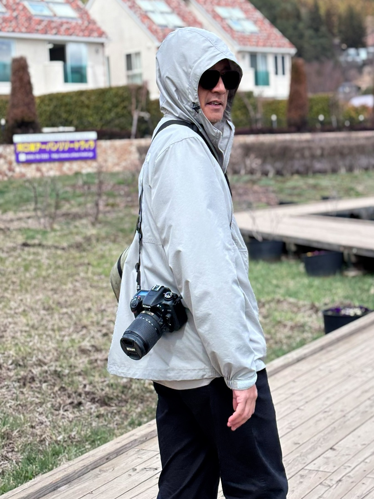

Ivan
Fine Art Photographer

Welcome to nar4frame
I am Ivan, a fine art photographer with a passion for capturing landscapes, nature, and quiet moments that often go unnoticed. Through every photograph, I seek to transform ordinary scenes into timeless visual stories that evoke emotion and invite reflection.
Every image is created with patience, thoughtful composition, and careful attention to light. Rather than simply documenting a place, my goal is to express atmosphere, mood, and the beauty hidden within everyday moments.
Photography Philosophy
Photography, to me, is more than recording a scene—it is a way of expressing emotion, atmosphere, and silence. Every photograph should invite the viewer to pause, reflect, and experience the moment beyond what is immediately visible.
Through nar4frame, I focus on creating timeless fine art images where light, composition, and mood work together to communicate a quiet and meaningful visual story.
Creative Focus
-
Landscape
Fine Art Landscape -
Nature
Floral • Macro • Botanical -
Scenic
Travel • Architecture • Street
Camera & Lenses
Camera
Nikon D7500
Primary Lens
AF-S Micro-NIKKOR 105mm f/2.8G IF-ED VR
General Purpose
AF-S DX NIKKOR 18-140mm f/3.5-5.6G ED VR
Get in Touch
nar4frame@gmail.com